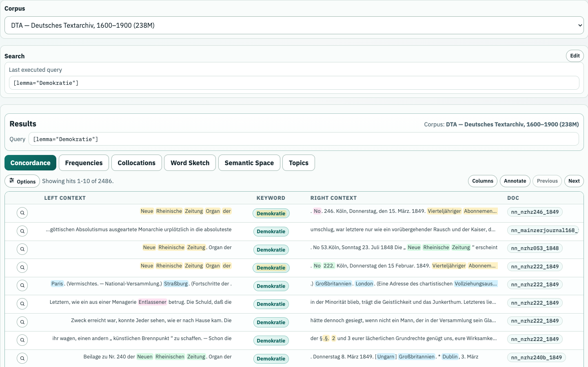
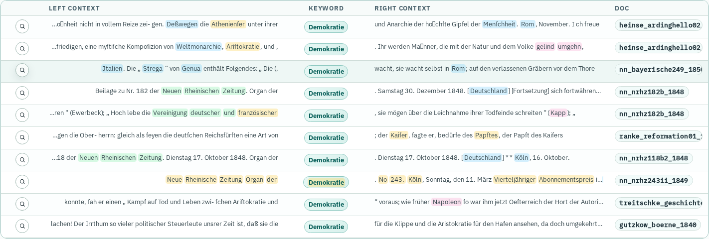
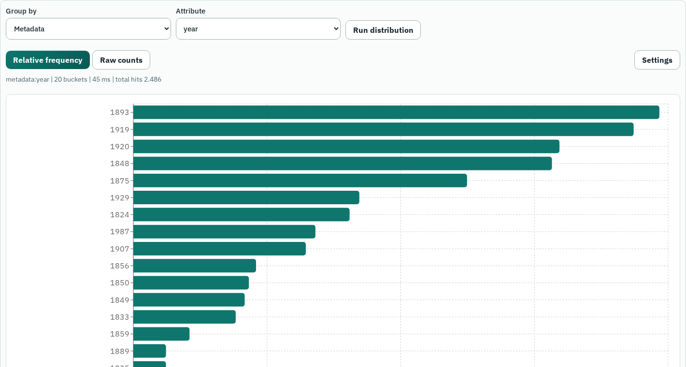
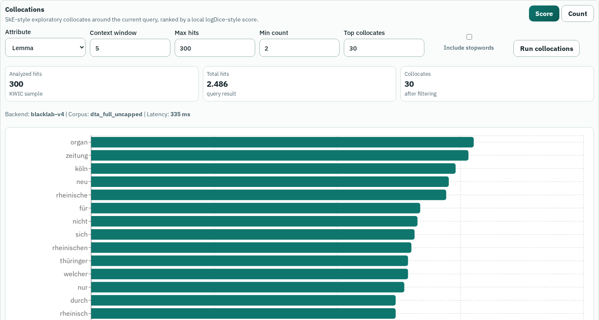
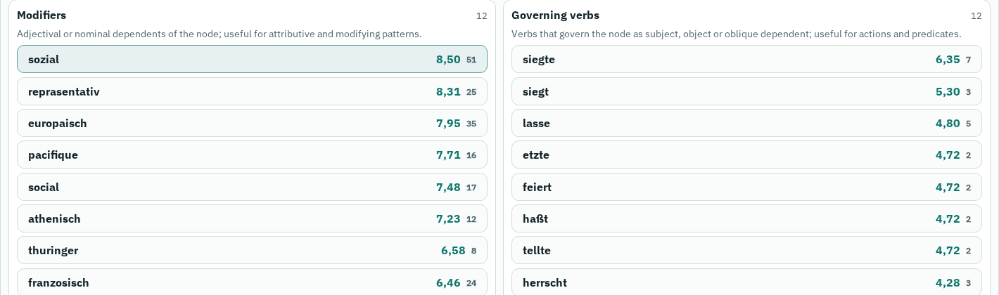
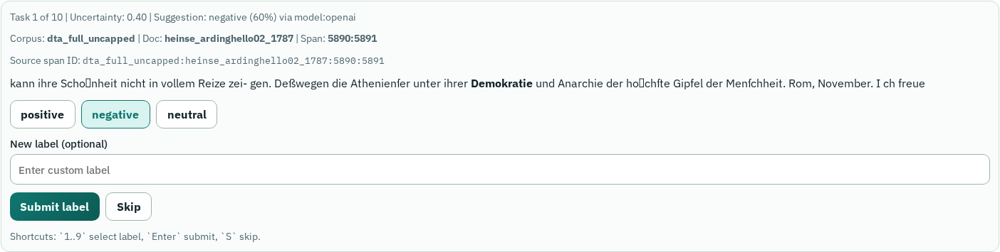

Was kann man mit großen, annotierten Textsammlungen sehen und tun?
Welche Infrastruktur macht diese Methoden als Workflow nutzbar?
TextLab ist heute zugleich Werkzeug, Fallbeispiel und Blick in eine DH-Infrastruktur.
Keine Suche ohne Korpusmodell.
Keine Zahl ohne Datenmodell.
Keine Methode ohne sichtbaren Workflow.
Empirische Sprach- und Textanalyse auf der Basis dokumentierter, maschinenlesbarer Textsammlungen.
Einzelbelege und quantitative Muster werden zusammen gelesen: Konkordanz, Frequenz, Kollokation, Variation.
Korpora sind keine Rohdaten, sondern modellierte Quellen: Auswahl, Metadaten, Annotation und Interface prägen jedes Resultat.
Kontext finden
Konkordanzen machen viele Belege schnell lesbar.
Variation vergleichen
Treffer lassen sich nach Zeit, Genre, Register, Region oder Community gruppieren.
Hypothesen prüfen
Frequenzen und Kollokationen machen erwartete und unerwartete Muster kontrollierbar.
Korpuslinguistik ersetzt Interpretation nicht. Sie macht Suchräume, Muster und Gegenbelege expliziter.
Concordance
KWIC lesen
Bedeutung entsteht im Kontext.
Frequency
zählen und gruppieren
Frequenz ist corpus-relativ.
Collocation
Nachbarschaften finden
Wörter haben typische Umgebungen.
Annotation
Merkmale hinzufügen
POS, Lemma, Dependency, Labels.
Workflow
kombinieren
Suche + Vergleich + Modell.
0-10 Einstieg TextLab als DH-Korpuslabor.
10-25 Infrastruktur Architektur, Registry, Ingestion.
25-45 Live-Demo DTA: Query, KWIC, Frequenz, Varianten.
45-60 Hands-on Dieselbe Pipeline selbst nachvollziehen.
60-70 Kontrast Reddit, Plattformdaten, Subreddit-Verteilungen.
70-80 Module Kollokationen, Word Sketches, Semantik, LLMs.
80-90 Hands-on + Diskussion Eigene Query + Modul ausprobieren.
Regel für Montag: DTA ist der gemeinsame Startpunkt; Reddit, COHA und KI-Module zeigen die methodische Bandbreite.
1
Frage operationalisieren
Was zählt als Treffer?
2
Query ausführen
Korpus, Query, Trefferzahl notieren
3
KWIC scannen
Kontexte, typische Verwendungen, Überraschungen
4
Metadaten vergleichen
Jahr, Genre, Subreddit, Dokumenttyp
5
Weiterarbeiten
vergleichen, clustern, modellieren
[lemma="Demokratie"]
Die Treffer clustern stark um 1848.
Was erlaubt dieses Muster zu behaupten, und was nicht?
Arbeitsumgebung
Suche, KWIC, Frequenzen, Kollokationen, Word Sketches, semantische Suche und Annotation.
Infrastruktur
React-Frontend, FastAPI-Backend, BlackLab-Indizes, Analysejobs und Registry-Konfiguration.
Methode
Dieselben Daten lassen sich als KWIC, Zeitreihe, Kollokationsprofil, semantischer Raum oder Label-Set betrachten.
TextLab ist interessant, weil Datenmodellierung und Analysewerkzeuge in einer Oberfläche zusammenkommen.
Text
Was wurde gesammelt, transkribiert, normalisiert oder ausgeschlossen?
Metadaten
Welche Kategorien ordnen das Material, bevor wir es durchsuchen?
Annotation
Welche Tokens, Lemmas, POS-Tags, Dependencies und Entitäten werden berechnet?
Interface
Welche Resultatansichten machen Muster sichtbar oder unsichtbar?
Korpuskritik erweitert Quellenkritik in die Suchoberfläche hinein.
1 Rohdaten
XML, Reddit, PDF, Text
→
2 Normalisierung
Dokumente, Chunks, Metadaten
→
3 Annotation
Token, Lemma, POS, Dep, NER
→
4 Index
BlackLab, BCQL, KWIC, Groups
→
5 TextLab
API, UI, Module, Export, Annotation
Corpus Registry: Labels, Attribute, Werte, Capabilities und bekannte Einschränkungen verbinden Normalisierung, Index und UI.
Die Registry ergänzt den Index: BlackLab bleibt Quelle für vorhandene Felder; die Registry beschreibt, wie diese Felder sinnvoll genutzt werden.
Problem
Attribute existieren technisch, aber ihre Bedeutung ist nicht automatisch klar.
Risiko
Query Builder, Dokumentation und QA driften auseinander.
Lösung
corpora.yml wird Single Source of Truth für Korpusprofile.
Nutzen
UI, Docs und Tests sprechen über dieselben Felder, Werte und Grenzen.
01
Herkunft
Rechte, Sampling, Zeitraum, Sprache
02
Dokumentmodell
Dokument, Chunk, Satz, Token
03
Metadaten
Jahr, Quelle, Genre, Subreddit, Typ
04
NLP
Token, Lemma, POS, Dep, NER
05
Index
Vertikalformat, BlackLab, Capabilities
06
Registry
Felder, Werte, Labels, Limits
| Korpus | Größe | Wofür heute gut? | Live-Idee |
|---|---|---|---|
| DTA | 238.3M Tokens | historisches Deutsch, diachrone Muster, KWIC, Frequency, Word Sketch | Demokratie, Freiheit, Varianten nach Jahr |
| COHA | 469.9M Tokens | historisches Englisch, Genres, lexikalischer Wandel | computer, radio, automobile nach Dekade |
| German Reddit | 61.2M Tokens | Plattformkommunikation, Subreddits, Gegenwartssprache | deutsch nach Subreddit |
| English Reddit | 41.3M Tokens | regionale Communities, Subreddit-Kontrast | Wales nach Community |
Im UI werden Tokenzahlen angezeigt; Trefferzahlen entstehen erst aus Korpus + Query + Filter.
Was kann man aus einer Suchanfrage alles machen?
Demokratie als politischer, historischer und semantisch mehrdeutiger Begriff.
→
[lemma="Demokratie"]
ein Suchweg, nicht der Begriff selbst.
→
Treffer, KWIC-Kontexte, Jahre, Genres, Communities.
Wir nutzen einfache BlackLab/BCQL-Queries:
[lemma="Demokratie"]
[lemma="Freiheit"]
[word="Teutsch.*"]
lemma gruppiert flektierte Formen. word sucht konkrete Wortformen. .* erweitert die Suche regulär. Jede Erweiterung verändert, was später als Treffer gilt.

Viele Fundstellen schnell scannen, typische Kontexte finden und interessante Beispiele öffnen.
BlackLab liefert Tokenkontext, Annotationen und Dokumentmetadaten; TextLab macht daraus KWIC-Zeilen, Details, Export und Annotation Targets.
[lemma="Demokratie"]: politische Argumente, Zeitungskontexte, metasprachliche Verwendungen und Zeitverläufe werden gemeinsam sichtbar.
Eine Trefferliste ist ein Einstiegspunkt: von dort aus geht es zu Frequenzen, Kollokationen, Annotation und Modellen.

True positive
relevanter Treffer
False positive
technisch getroffen, aber interpretativ falsch
False negative
relevant, aber von dieser Query verfehlt
Ein kurzer KWIC-Scan reicht oft, um danach schneller in Frequenzen und Module zu wechseln.
Treffer nach Jahr, Genre, Textklasse, Subreddit, POS, NER oder anderen Feldern gruppieren.
TextLab ruft BlackLab-Gruppierungen oder abgeleitete Distributionen ab: Buckets, Trefferzahlen, Dokumentzahlen und Normalisierung.
Der Peak um 1848 macht historische Dynamik sofort sichtbar und lädt zu weiteren Gruppierungen ein.
18481252
1893174
1875125
1856100
185090
Nächste Klicks: Genre vergleichen, einzelne Jahre öffnen, andere Lemmata testen.

Startpfad
dta_full_uncapped · [lemma="Demokratie"]
2.486.year: Peak 1848.Sprechspur: Eine Query kann nacheinander als KWIC, Zeitreihe, Vergleich und Explorationspfad genutzt werden.
Output
Eine kleine Exploration zu einer DTA-Query.
dta_full_uncapped[lemma="Demokratie"] oder [lemma="Freiheit"]year anschauenWas passiert, wenn wir vergleichen, explorieren und modellgestützt klassifizieren?
Deutsch
German Reddit · [lemma="deutsch"] · Group by subreddit
Smoke-Wert: 33.122 Treffer; Top: de, ich_iel, FragReddit.
Englisch
English Reddit · [word="Wales"] · Group by subreddit
Smoke-Wert: 46.003 Treffer; Top: Wales, Scotland, AskUK.
Reddit ist methodisch interessant, weil Sprache hier an Communities, Plattformregeln, Meme-Formate und Moderation gekoppelt ist.
DTA
[lemma="Demokratie"], [lemma="Freiheit"], [word="Teutsch.*"] nach Jahr.
COHA
[lemma="computer"], [lemma="radio"], [lemma="automobile"] nach Dekade und Genre.
Reddit
[lemma="deutsch"], [word="Wales"], Community-Vergleiche nach Subreddit.
Die Vorlesung muss nicht jede Query ausinterpretieren; wichtiger ist die Bandbreite der Analyseoperationen.
[lemma=“computer”]: Aufstieg ab den 1960/70ern
[lemma=“radio”]: Mediengeschichte im 20. Jahrhundert
[lemma=“automobile”] vs. [lemma=“car”]: lexikalische Konkurrenz
year, decade oder genre
Guter Didaktikpunkt: Bei computer sieht man lexikalischen Wandel und ältere Personenbedeutungen sehr schnell im selben Workflow.
Typische lexikalische Nachbarschaften eines Suchtreffers explorieren.
TextLab zählt Kandidaten in KWIC-Fenstern oder Indexgruppen und sortiert nach Frequenz oder Assoziationsscore.
Fenstergröße, Mindestfrequenz, Lemma/Wortform und Score steuern, welche Nachbarschaften sichtbar werden.

Grammatische Umgebungen eines Lemmas zusammenfassen: Modifikatoren, Verben, nominale Partner, Präpositionen.
Dependency-Annotationen werden zu Relationengruppen verdichtet; Ergebnisse sind explorative Kandidaten.
Ein Lemma wird zu einer kleinen Karte typischer Subjekt-, Objekt- und Modifikatorbeziehungen.

KWIC-Kontexte werden als Embeddings repräsentiert, geclustert und projiziert.
Eine Frage wird eingebettet; TextLab sucht semantisch ähnliche Segmente im RAG-Index.
Ein Labelschema wird auf Treffer, Passagen oder Dokumente angewendet: Genre, Position, Haltung, Thema.
Manuelle und assistierte Labels machen Suchergebnisse zu Trainings- und Vergleichsdaten.
Der interessante DH-Punkt: dieselben Korpora können zugleich Suchindex, Statistikbasis, Embedding-Raum und Annotationsdatenbank sein.

1 Text types
Korpus/Filter festlegen
2 Query
Trefferraum erzeugen
3 Sample / Sort
Auswahl und Ansicht dokumentieren
4 Analysis
KWIC, Frequency, Collocation, Label
Perspektive für TextLab: Such- und Analyseoperationen sollten als sichtbare, reproduzierbare Schrittfolge speicherbar werden.
computer nimmt im 20. Jahrhundert zu.
In COHA zeigt [lemma="computer"] frühe Personenbedeutungen und später technische Bedeutungen; nach decade sieht man den Bedeutungs- und Technologiewandel.
Nächste Schritte: computer mit radio, television, internet vergleichen; Genreeffekte prüfen; KWIC-Beispiele als Annotation-Set sammeln.
Frage
Welche Exploration oder Vergleichsfrage?
Operationalisierung
Was zählt als Treffer?
Korpus
Welche Version, Felder, Größe?
Modul
KWIC, Frequency, Collocation, Sketch, Semantic, LLM?
Output
Screenshot, Query, Tabelle, Label-Set, nächste Frage?
Output
Eine kleine Demo-Karte zu einer Query oder einem Modul.
In Korpus X liefert Query Y mit Modul Z ein interessantes Muster: …
Ein Beispiel oder Bucket ist: …
Als nächstes würde ich testen: …
Wenn TextLab oder das Netzwerk instabil ist:
Tools sind austauschbar; entscheidend ist die transparente Analyseoperation.
[lemma="Demokratie"] → KWIC → Frequency by year → ca. 2.486 Treffer.[lemma="deutsch"] → Frequency by subreddit → ca. 33.122 Treffer.[word="Wales"] → Frequency by subreddit → ca. 46.003 Treffer.TextLab zeigt DH-Infrastruktur als Zusammenspiel aus Korpusarbeit, Softwarearchitektur, statistischer Verdichtung, Modellverfahren und interpretierender Rückbindung an Texte.
Die zentrale Kompetenz ist nicht, ein Tool zu bedienen, sondern Operationen so zu formulieren, dass sie als wissenschaftliche Entscheidungen diskutierbar werden.
Korpus kennen.
Methoden kombinieren.
Nächste Frage finden.